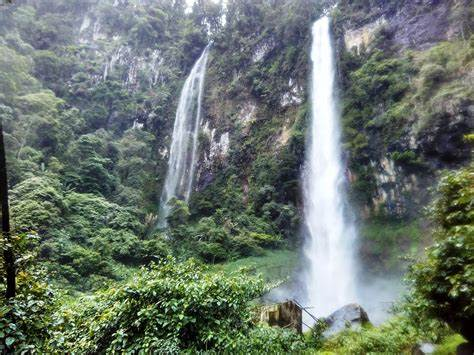

Curug Cileat
Curug Cileat adalah sebuah curug atau air terjun yang terletak di kabupaten Subang bagian Selatan, Provinsi Jawa Barat, Indonesia. Belum diketahui pasti ketinggian Curug Cileat namun diperkirakan tingginya sekira 100 meter dengan debit air yang sangat besar terlebih saat musim penghujan.